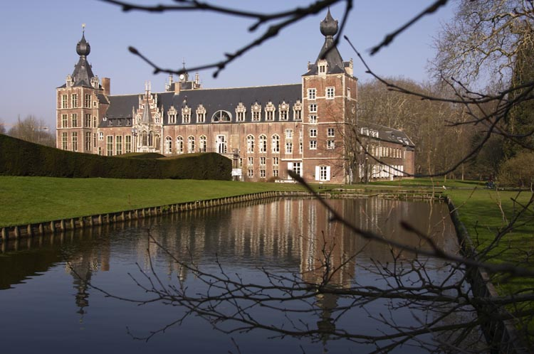
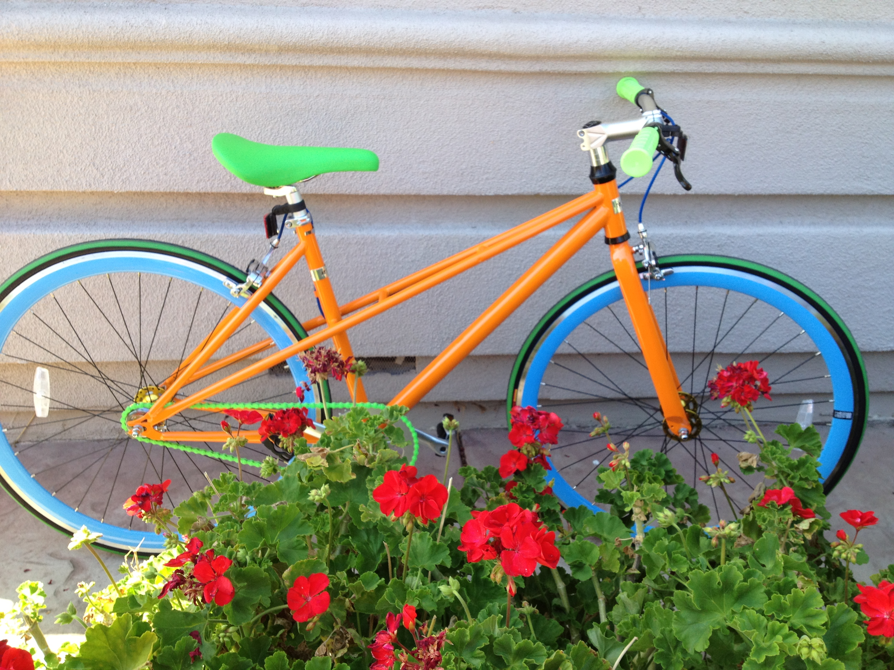

I was born in a cute town in Belgium named Leuven. 
I grew up in San Jose, California and attended Lynbrook High School. I picked up random hobbies like chess and origami along the way - however, I spent most of my childhood outside shooting hoops in the driveway or longboarding around the neighborhood.
I am currently a senior at MIT studying course 6-3 (computer science) - I am very lucky to have discovered how awesome computer science is at a time in my life when I was looking for something awesome to study. I plan [hope] to graduate in the spring of 2014.
I play on the varsity volleyball and basketball teams at MIT. They keep me quite busy but I wouldn't have it any other way.
I'm pretty competitive - it's a good thing that my teammates are really legit.
I absolutely adore my bike - sometimes (when the weather is bearable), I bike around Boston just so I can appreciate how beautiful my bike is. 
I take pride in the fact that I type fluently in Dvorak. Unfortunately, it's actually because I no longer know how to type in QWERTY.
At some later date, I may try to provide a more illustrative description of my technical experiences. For now, please accept my resume.